Approcci multidisciplinari per un’analisi dei sistemi insediativi e dei trend demografici nel lungo termine
Il caso studio del Levante Meridionale nell’Età del Ferro
![]()
Università di Torino
Università di Torino
Introduzione
1 2 3 4
Introduzione al progetto
1 2 3 4
- Politiche di governance e paesaggi politici nel Levante meridionale durante l’Impero neo-assiro
- 2 anni
- Finanziato dalla Fondazione Gerda Henkel
- Dipartimenti di Studi Storici (Unito)
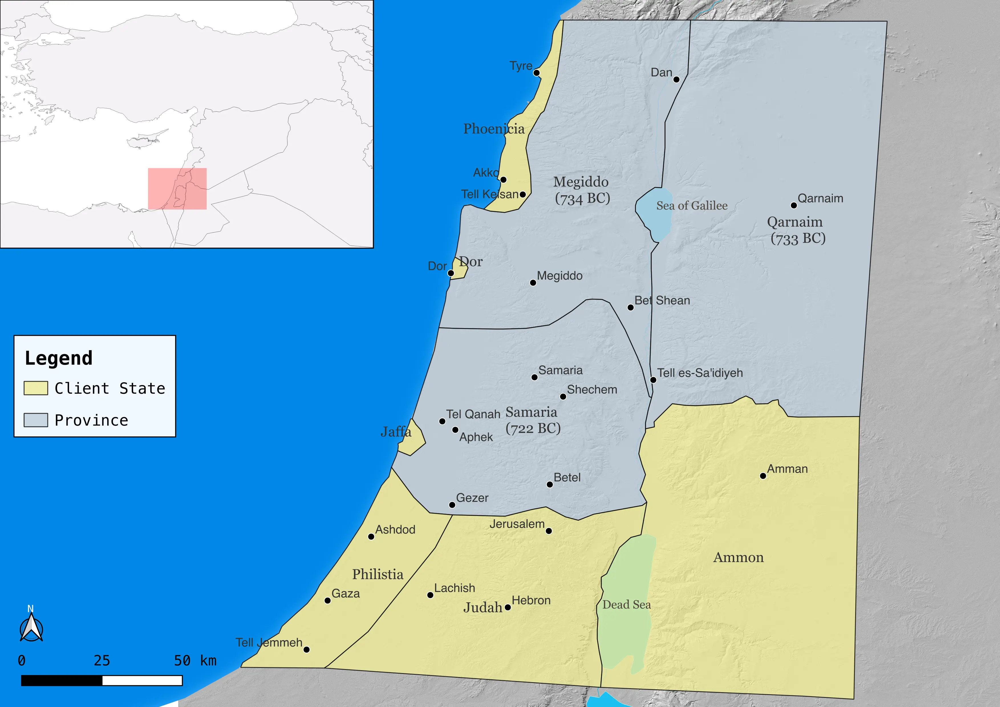
Il Levante Meridionale nell’età del Ferro
1 2 3 4
- Regni regionali: Israele, Giuda, Ammon, Moab, Edom, Filistia, città-stato Fenice
- Conquista assira (732-720 BC)
- Nuova situazione politica (province e stati cliente)
- Ruolo dell’impero nella trasformazione dei sistemi insediativi e popolazione della regione?
Obiettivi di ricerca
1 2 3 4
- Analizzare i modelli di popolazione e di insediamento nella regione del Levante meridionale per investigare le strategie imperiali assire
- Samaria e Giuda (spesso contrapposte come esempi del ruolo distruttivo dell’impero assiro)
- Approccio olistico che integra i dati archeologici, testuali e geografici in un quadro spaziale
- Analisi a lungo termine: Calcolitico (4500 a.C.) - Bizantino (638 d.C.)
- In questa sede: analisi e presentazione dei trend demografici
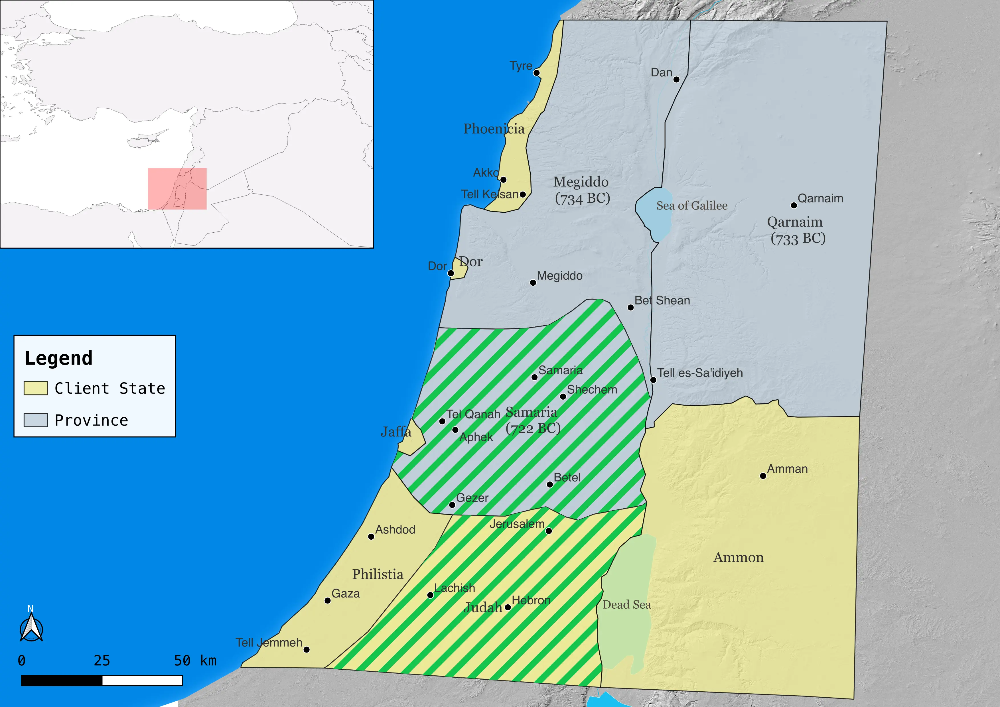
Metodologia
1 2 3 4
Approcci statistici e probabilistici per l’analisi dei trend demografici regionali
1 2 3 4
Le stime di popolazione si basano su un assunto:
- Una densità di materiale archeologico osservabile nel tempo e in un’area studio è (in qualche modo) direttamente proporzionale alla popolazione
- Più grande la popolazione, maggiore sarà il record archeologico
Data la natura del record archeologico:
- approccio multi-proxy e conscio dell’incertezza temporale, qualitativa e quantitativa
- Prospettiva a lungo termine
- Fluttuazioni e non numeri assoluti
Radiocarbonio
1 2 3 4
Summed Probability Distribution (SPD) (Crema 2022)
- Ogni data al radiocarbonio viene calibrata e trasformata in una distribuzione probabilistica
- Binning per mitigare eterogeneità spaziale e temporale (Timpson et al. 2014)
- La distribuzione probabilistica per ogni campione viene sommata
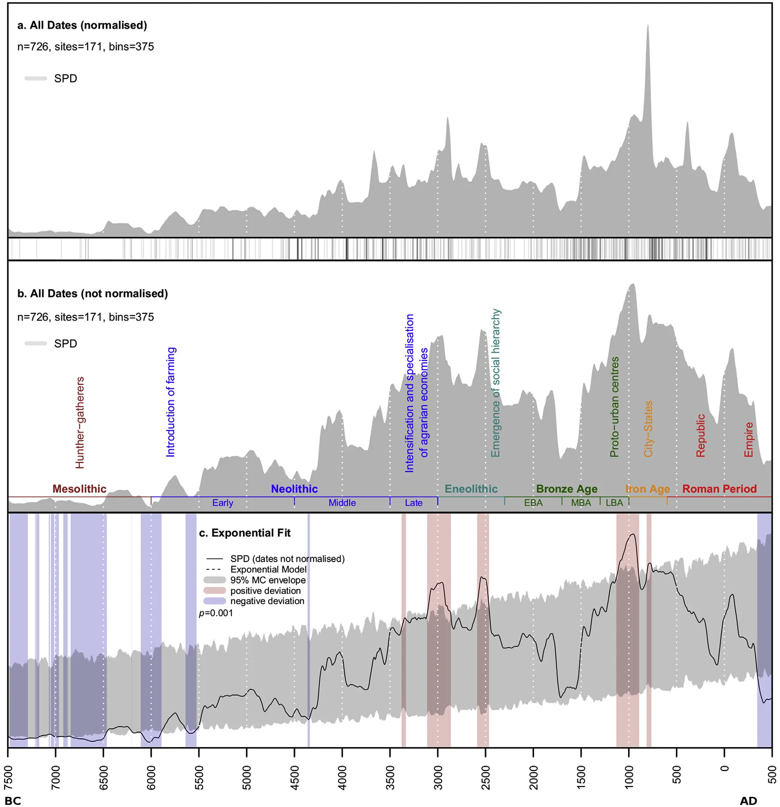
Dati archeologici - Approcci aoristici
1 2 3 4
- Approcci aoristici (Crema et al. 2010; Crema 2012; Kolář et al. 2016)
- Incorporare l’incertezza del dato archeologico tramite metodologie quantitative
- La probabilità totale di un evento archeologico (fase di occupazione del sito) in un determinato arco di tempo è 1 (certezza assoluta che il sito sia stato in uso in quell’arco di tempo)
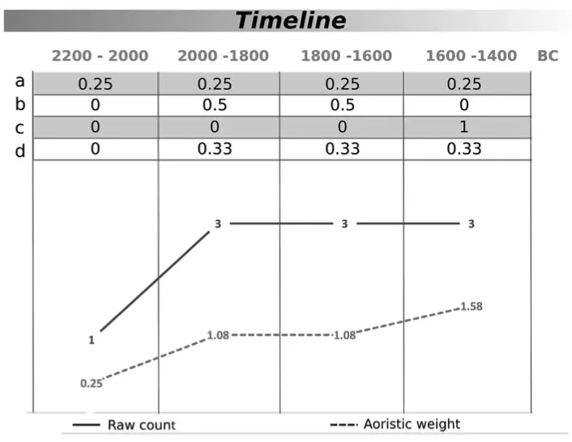
Monte Carlo Simulation
1 2 3 4
- Siti: bilanciare l’ampio range cronologico e la probabile minore durata dell’occupazione di un sito
- Radiocarbonio: valutare la significatività statistica delle deviazioni da un modello di crescita generato casualmente
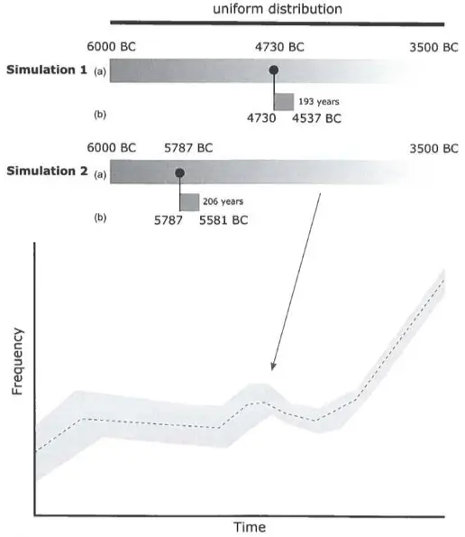
Raccolta dati
1 2 3 4
- The Archaeological Survey of Israel (e.g. Kloner 2000)
- Samaria Survey (Finkelstein et al. 1997)
- Manasseh Hill Surveys (Bar and Zertal 2021, 2022; Zertal 2004, 2007; Zertal and Bar 2017, 2019; Zertal and Mirkam 2016)
- NERD Database (Palmisano et al. 2022)
- 4194 Siti raccolti
- 11331 Fasi di occupazione
- 1223 Date al radiocarbonio
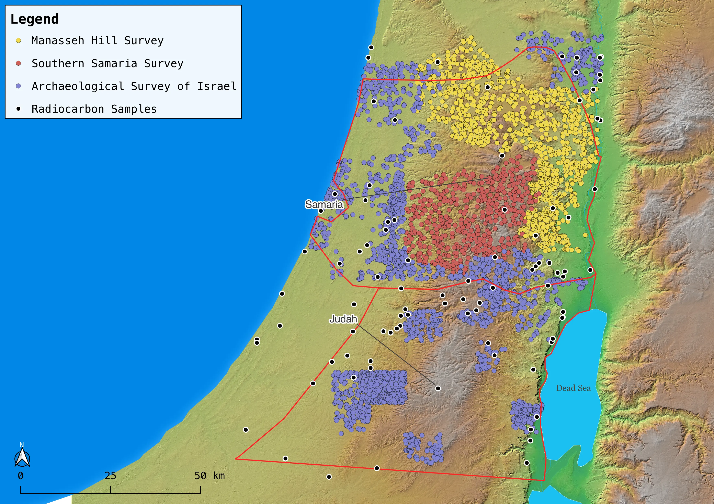
Elaborazione dei dati
1 2 3 4
- Database geospaziale in QGIS, R scripts
- Armonizzazione cronologica e selezione esclusivamente di evidenze di occupazione antica (insediamenti)
Interfaccia QGIS con esempio di site-phases
Risultati preliminari
1 2 3 4
Summed Probability Distribution
1 2 3 4
- Aggregate date in bins di 100 anni
- 1223 data aggregate in 388 bins
- Confrontate con un modello di crescita esponenziale (1000 simulazioni)
- Asse Y - Densità di date
- Booms and Busts in EBA
- Declini popolazione in MBA/LBA (non statisticamente significativo)
- Aumento significativo in transizione LBA/IA e IA I/II
- Declino graduale (post 2500 BP - artificiale)
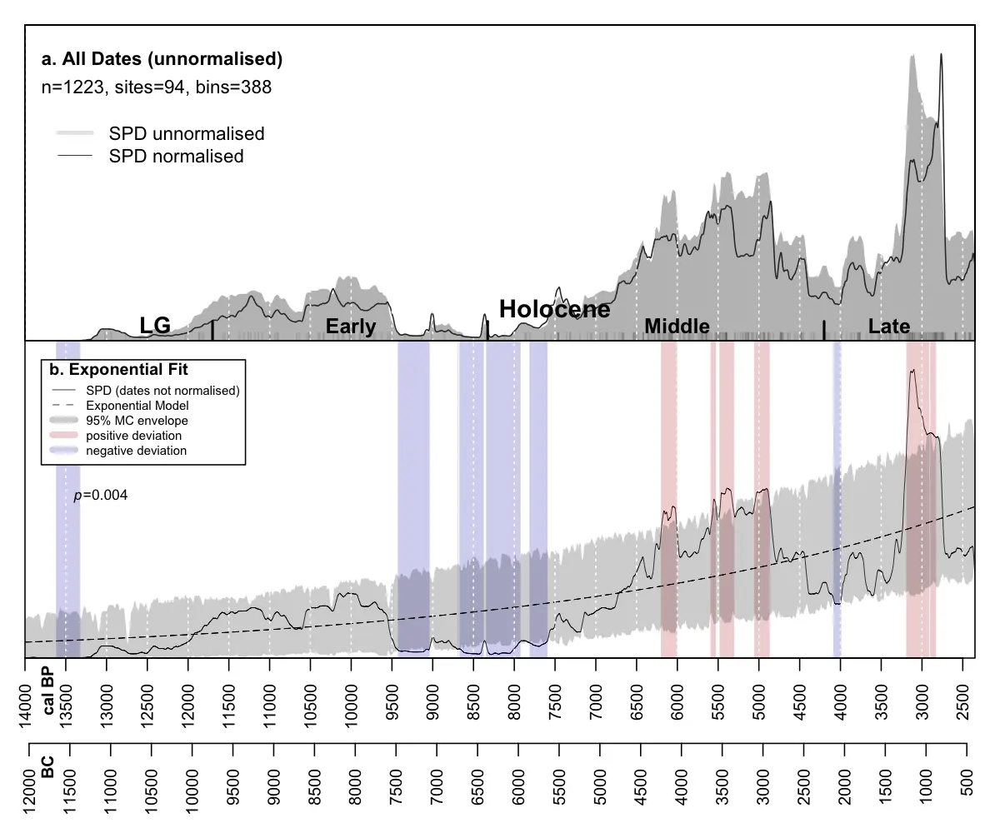
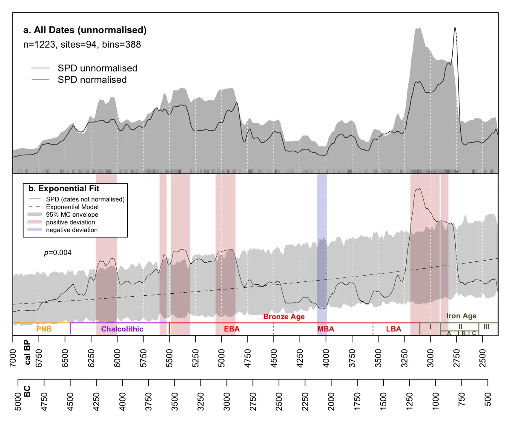
SPD - Confronto Regionale tra Samaria e Giuda
1 2 3 4
- Permutation Test, in che grado le curve regionali si discostano da quella generale
- Analizzare le divergenze regionali nelle fluttuazioni demografiche (Crema et al. 2016)
Deviazioni positive (statisticamente significative)
- Judah: 3463~3446 BP / 3245~3189 BP
- Samaria: 7253~7143 BP / 7113~7035 BP
- In generale, la curva non diverge significativamente, soprattutto nel periodo di interesse (IA)
- Differenze più marcate (ma non statisticamente significative) in EBA-MBA
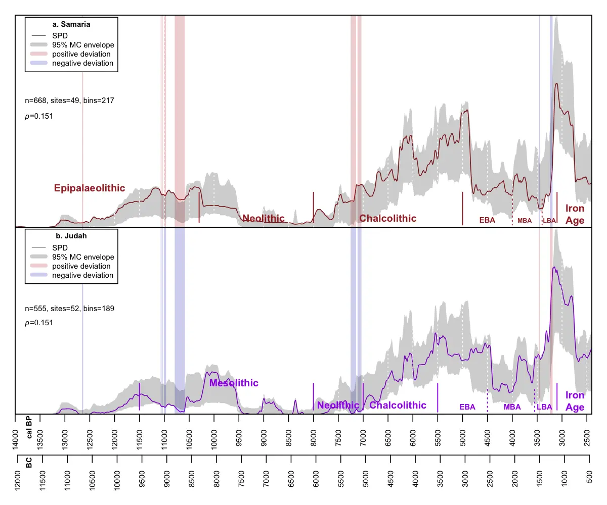
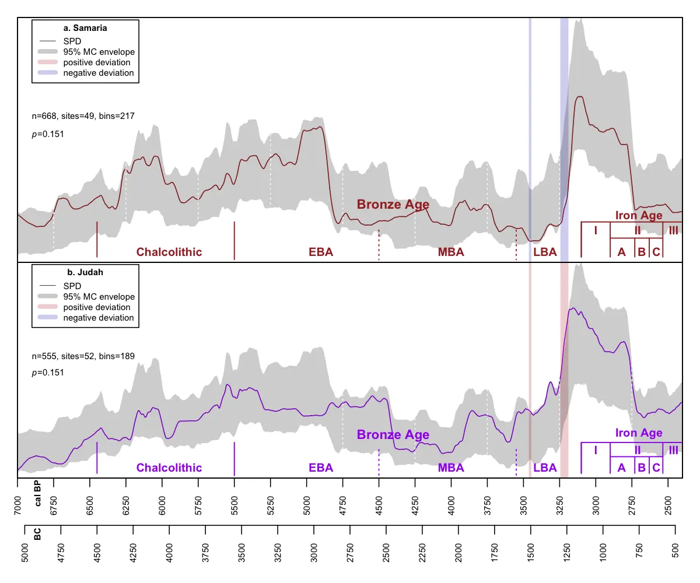
Proxy archeo-demografici
1 2 3 4
- Calcolo aoristic weight
- 1000 simulazioni (Monte Carlo) per ottenere curva randomizzata
- Time block 100 anni, 4194 siti, 11331 site phases
- Normalizzazione e rappresentazione grafica dei differenti proxy utilizzati
- Ispezione singole regioni per evidenziare differenze locali
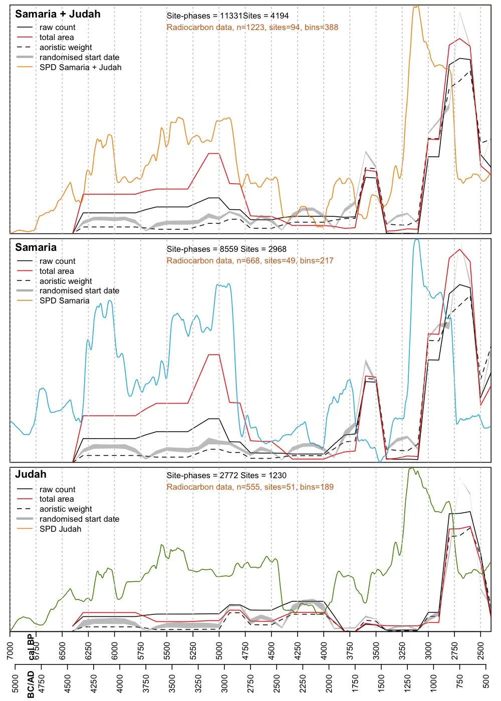
Proxy archeo-demografici - Intera area
1 2 3 4
- Aumento popolazione in EBA, con graduale declino nel passaggio al MBA
- Un secondo picco nel MBA II-III
- Aumento significativo nell’età del Ferro I-II e declino graduale in periodo Persiano
Proxy archeo-demografici - Confronti regionali
1 2 3 4
- Giuda: crescita graduale fino all’IBA e fluttuazioni minori nel MBA II-III
- La crescita nell’età del Ferro appare leggermente più tardi che in Samaria
- Samaria: picchi maggiori, crescita in periodo persiano
- Area cumulativa tendenzialmente maggiore
- Meno siti archeologici disponibili per Giuda
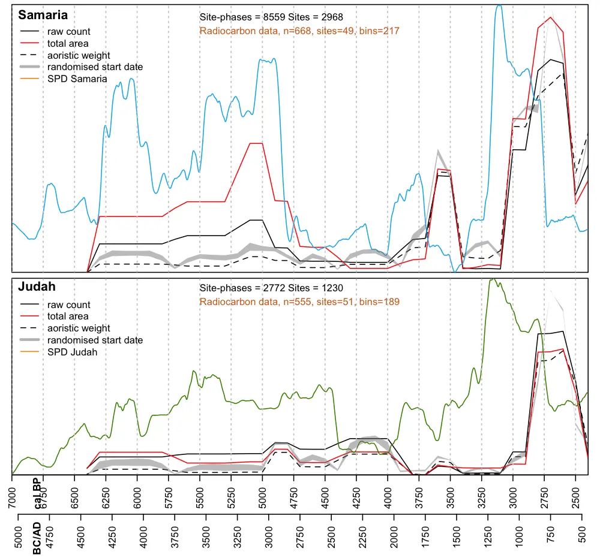
Proxy archeo-demografici
1 2 3 4
- Curve SPD e proxy archeologici meno correlati
- Periodizzazioni archeologiche basate sulla cultura materiale
- Più analisi necessarie
| count | area | aorist | random | spd | |
|---|---|---|---|---|---|
| count | 1 | 0.95 | 0.95 | 0.93 | 0.37 |
| area | 0.95 | 1 | 0.85 | 0.85 | 0.31 |
| aorist | 0.95 | 0.85 | 1 | 0.96 | 0.36 |
| random | 0.93 | 0.85 | 0.96 | 1 | 0.30 |
| spd | 0.37 | 0.31 | 0.36 | 0.30 | 1 |
Proxy archeo-demografici - Discussione
1 2 3 4
Trend assimilabili a pattern sovra-regionali (Palmisano et al. 2019, 2021)
- Aumento numero e dimensione insediamenti tra Calcolitico ed EBA I-II
- Diminuzione e stagnazione in IBA, LBA
- Crescita in IA I-II
- Declino in periodo Babilonese, e ripresa tra Persiano ed Ellenistico
Curva demografica multi-proxy
per il Levante Meridionale
(da Palmisano et al. 2021)
Proxy archeo-demografici - Età del Ferro
1 2 3 4
- Età del Ferro II
- Samaria: Ristrutturazione del sistema insediativo a Samaria (Squitieri 2024), picco dopo un periodo di crescita
- Giuda: estensione sistema insediativo, urbanizzazione e centralizzazione in un periodo più tardo (Bienkowski 2022)
- Trend che sembra confermato dai proxy archeo-demografici
- Curve e fluttuazioni demografiche molto simili
- Se profonda differenza insediativa, le due curve sarebbero state divergenti, o profondamente differenti
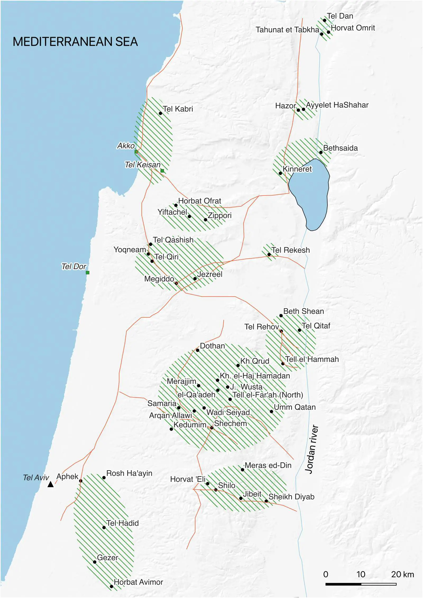
Proxy archeo-demografici - Discussione
1 2 3 4
- Sebbene traiettorie simili, non necessariamente cause simili
- Le dinamiche regionali devono essere accuratamente valutate (fenomeni complessi e sfumati)
- Ruralizzazione tipica dell’età del Ferro (Squitieri 2024; Wilkinson 2003)
- Non sempre a detrimento dell’intero sistema insediativo pre-esistente (Bienkowski 2022; Mashiach and Davidovich 2023; Porter et al. 2014; Routledge 2004)
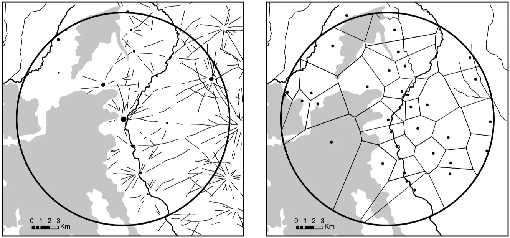
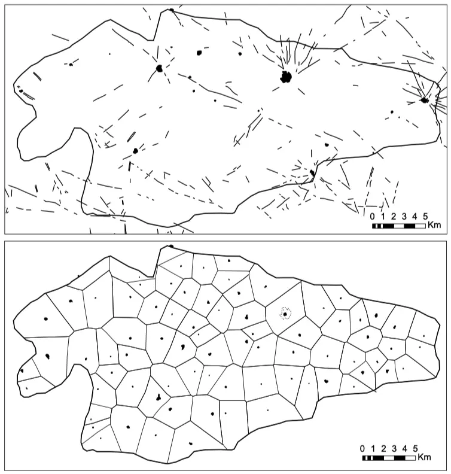
Conclusioni
1 2 3 4
Conclusioni
- Approcci multi-proxy possono fornire interessanti spunti di confronto e di interpretazione
- L’estensione dei siti fornisce risultati comparabili a proxy usati in precedenza
- I risultati ottenuti mostrano come le due regioni si conformano a quanto noto per il più ampio Levante Meridionale e Asia Sud-Occidentale, con variazioni regionali
- Giuda e Samaria non mostrano sensibili differenze nell’età del Ferro a livello di insediamenti ed SPD (contra Faust 2021)
Conclusioni - prossimi step
- Integrazione di dati storici e testuali (Novotny and Radner 2018)
- Analisi olistica del paesaggio politico
- Pubblicazione del dataset e delle analisi nelle rispettive repository online
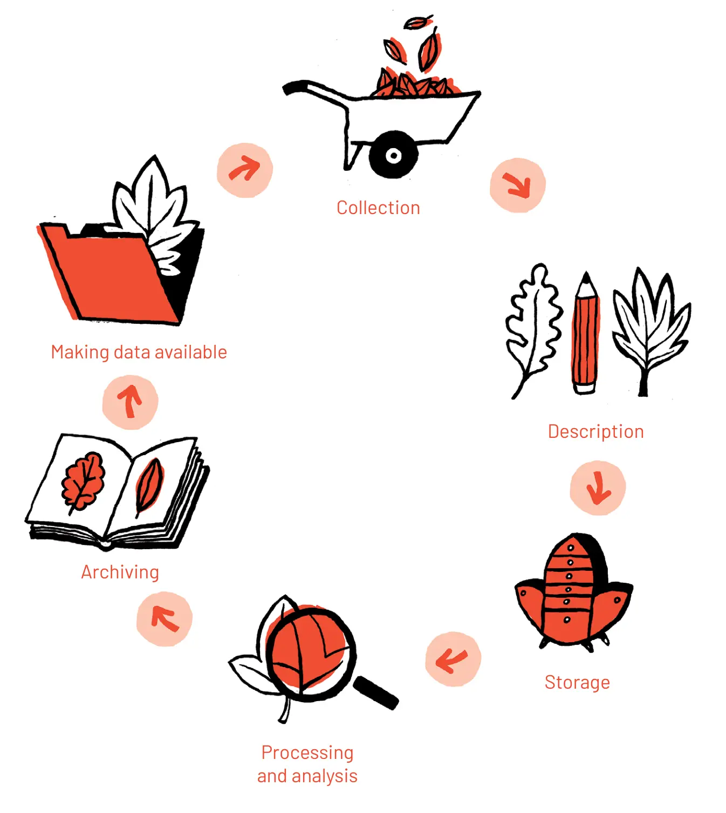
Grazie dell’attenzione!
Andrea Titolo (andrea.titolo@unito.it) - 0000-0002-7322-8634
Alessio Palmisano (alessio.palmisano@unito.it) - 0000-0003-0758-5032
Presentazione online al qrcode sopra o al seguente link
< https://doi.org/10.5281/zenodo.12011486 >